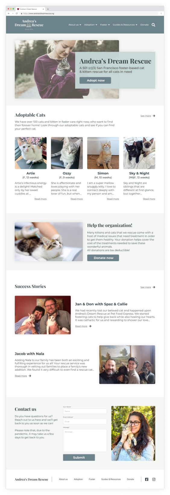
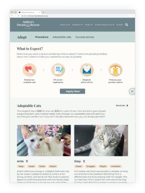
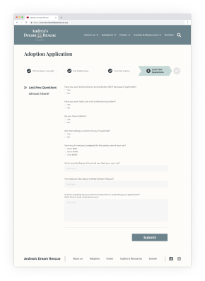
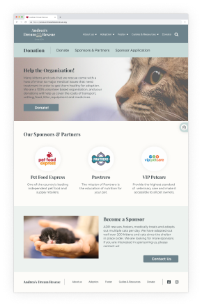

Andrea’s Dream Rescue
Website Redesign
01 Project Overview
Problem Statement
Andrea’s Dream Rescue website is not designed to handle the increase in demand for kittens/cats to adopt. They need more foster parents, and an updated adoption page, as well as increase donations.
Team Size
4 People
Timeline & Output
2 weeks to redesign a website
Tools Used
Figma, Miro, Photoshop
My Role
UI/UX Designer
02 Research Phase
In this research project, we planned and conducted 5 interviews, 25 surveys, and a stakeholder interview in San Francisco. Base on the data we’ve collected our users is most 25 - 34 years old women that are in a relationship and live in the bay area.

Stakeholder Pain Points
Increase Donations
Increase Foster Parents
Create Foster Parent Database
User Primary Desires
More pictures & videos of cats
Know about cats availability
Learn about adoption process
Usability Testing
We did the Usability Testing Tasks to observe if users can easily navigate through the website. We came up with four tasks: Is the user able to choose a cat to adopt? Is the user able to access the application page? Is the user able to access the donation page and understand the donation process? Is the user able to successfully find the foster section?
Choose a cat to adopt
Access the adoption application
Learn about donation process
Access the foster page
Fortunately, the majority of the users finish tasks effortlessly. Apart from the tasks, we noticed the menu from the current website is using a hamburger menu that is not very accessible for users to browse on a desktop webpage. Moreover, some of the users complained about the adoption application form is too much to scroll through, and suggested it should have a progress bar and keep the questions minimum.
Initial User Feedback
“Simple and easy to navigate, straight forward, a little bit too plain.”
“The adoption application is too much to scroll through, should have progress bar.”
Heuristic Evaluation
Feature Prioritization Matrix
03 Definition
Based on our interview with the stakeholders and our user interviews, we developed our user persona.
User Persona
Storyboard
User Flow
Information Architecture
04 Ideation
Sketches
After consolidating all the information in fewer pages, we began our ideation process by sketching out ideas and discussing what we would focus on for each page, and then we discussed which ways to go.
Lo-Fi Wireframes
Usability Test
We also wanted to test how easy it was for a user to find the right information by using the navigation. So we found out that the “deep linking“ from the dropdown was not only better for the user to see all the available sections but also made it easier to access. With our new design, the users were able to find all the important content with just a click or two.
So base on the user testing, we prioritized things that needed to be fixed
- The Application is too long, too many questions
- Confused about what Donations help with

Style Guide
05 Final Design

Desktop Version
There’s a bigger emphasis on cat images and a consistent “warm, friendly, and dreamy” feeling across the whole website. To enhance the explanation of the adoption process we decided to use some simple illustrations to show what people should expect, it's more intuitive. Moreover, we dive the application form into 4 stages to make the filling process easier to follow, instead of seeing a very long and overwhelming form.
   